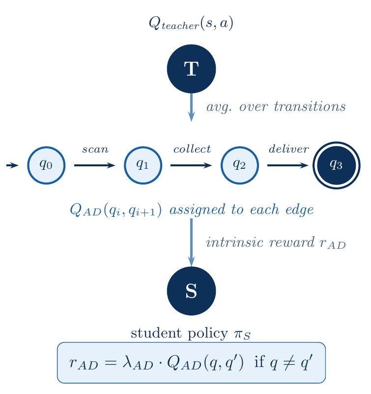
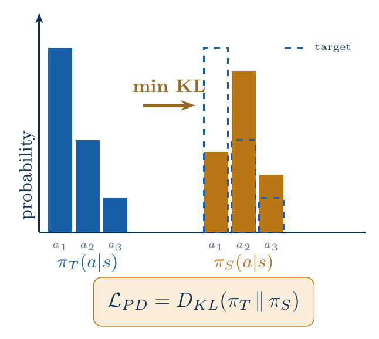
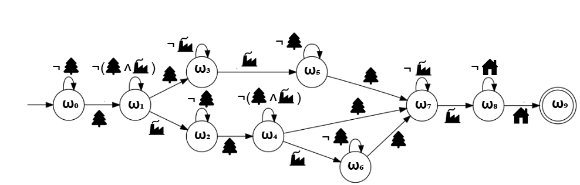
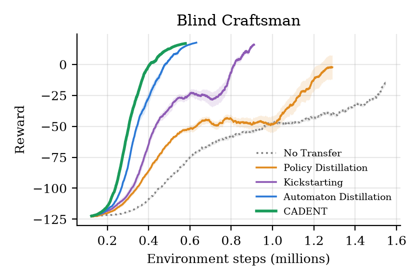
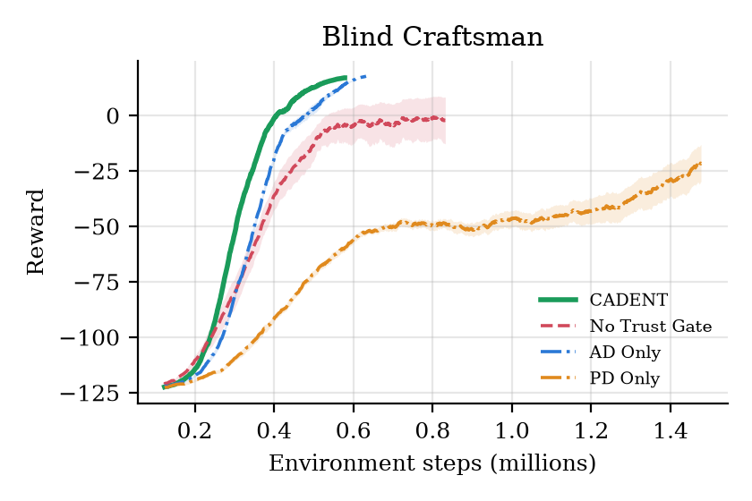
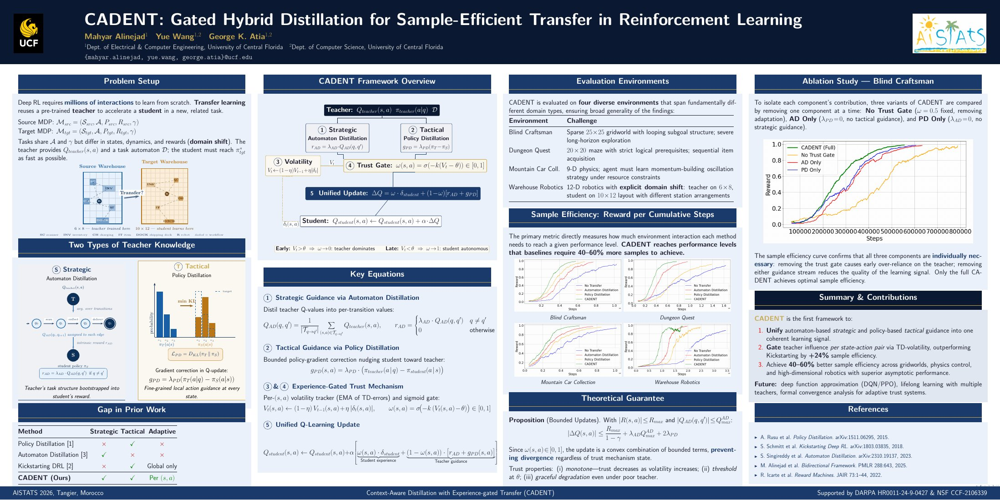

TL;DR Transfer what to achieve and how to act, and let the student decide when to trust the teacher. CADENT combines strategic knowledge (values of the task automaton's transitions) with tactical knowledge (the teacher's action preferences) and gates both, per state-action pair, by how stable the student's own experience already is.
Abstract
Transfer learning promises to reduce the high sample complexity of deep reinforcement learning (RL), yet existing methods struggle with domain shift between source and target environments. Policy distillation provides powerful tactical guidance but fails to transfer long-term strategic knowledge, while automaton-based methods capture task structure but lack fine-grained action guidance. This paper introduces Context-Aware Distillation with Experience-gated Transfer (CADENT), a framework that unifies strategic automaton-based knowledge with tactical policy-level knowledge into a coherent guidance signal. CADENT's key innovation is an experience-gated trust mechanism that dynamically weighs teacher guidance against the student's own experience at the state-action level, enabling graceful adaptation to target domain specifics. Across challenging environments, from sparse-reward grid worlds to continuous control tasks, CADENT achieves 40-60% better sample efficiency than baselines while maintaining superior asymptotic performance, establishing a robust approach for adaptive knowledge transfer in RL.
Two kinds of knowledge, one gate


- Strategic guidance. Teacher Q-values are distilled into automaton-transition values Q_AD(q, q′) = average teacher Q over the state-actions that move the automaton from q to q′
- Tactical guidance. The teacher's policy in each automaton phase nudges the student's policy: g_PD(s, a) = λ_PD · (π_T(a | q) − π_S(a | s))
- Experience-gated trust. A volatility tracker of the student's own TD errors sets a per-state-action trust weight, so the teacher dominates where the student is unsure and fades where it has learned: V(s, a) ← (1 − η) V(s, a) + η |δ| , ω(s, a) = σ(−k (V(s, a) − θ))
Benchmark: Blind Craftsman
| Teacher / student | 6×6 / 25×25 grid, different layouts |
| Task | collect wood (carry at most 2), craft 3 tools, return home |
| Valid orders | 1+1+1, 2+1, 1+2 |
| Reward | sparse: task completion only, plus a step cost |

Results


| Method | Env. steps to threshold | Fewer steps than No Transfer | Runs reaching it | Final reward |
|---|---|---|---|---|
| No Transfer | not reached | 0/20 | −20.1 ± 1.4 | |
| Policy Distillation | 1,246k ± 73k | 19% | 17/20 | −2.6 ± 9.4 |
| Kickstarting | 822k ± 39k | 47% | 20/20 | 15.5 ± 0.4 |
| Automaton Distillation | 489k ± 19k | 68% | 20/20 | 17.5 ± 0.1 |
| CADENT | 429k ± 9k | 72% | 20/20 | 16.8 ± 0.1 |
Mean ± standard error over 20 evaluation seeds; every method shares the same Q-learning settings, and each method's own parameters were tuned on separate seeds. Threshold: the 50-episode average reward reaches 90% of the way from the initial to the best final reward.
Every component matters
| Variant | Env. steps to threshold | Runs reaching it | Final reward |
|---|---|---|---|
| CADENT (full) | 429k ± 9k | 20/20 | 16.8 ± 0.1 |
| No trust gate (ω = 0.5) | 719k ± 124k | 16/20 | −1.7 ± 10.1 |
| Strategic only | 497k ± 16k | 20/20 | 17.5 ± 0.0 |
| Tactical only | 1,471k ± 51k | 6/20 | −24.6 ± 8.0 |
Poster

Try it
git clone https://github.com/mahyar333/CADENT.git && cd CADENT
pip install -e ".[dev]"
python -m cadent.run --config configs/blind_craftsman.yaml # all methods
python -m cadent.plot results/blind_craftsman # figuresPython 3.9+, MIT license. See the repository for the full documentation.
BibTeX
@inproceedings{alinejad2026cadent,
title = {{CADENT}: Gated Hybrid Distillation for Sample-Efficient Transfer in Reinforcement Learning},
author = {Alinejad, Mahyar and Wang, Yue and Atia, George},
booktitle = {Proceedings of the 29th International Conference on Artificial Intelligence and Statistics (AISTATS)},
year = {2026},
url = {https://openreview.net/forum?id=WkCSlfSa0B}
}